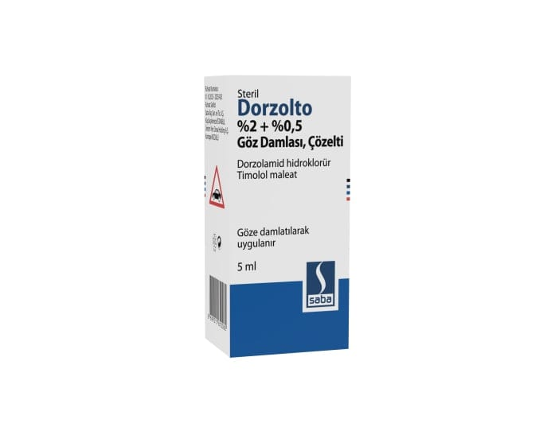

Dorzolto %2+%0,5 Göz Damlası, Çözelti (1 adet)

Ne için kullanılır
KT · Bölüm 1DORZOLTO dorzolamid hidroklorür ve timolol maleat etkin maddelerini içermektedir. Dorzolamid karbonik anhidraz inhibitörleri adlı bir ilaç grubunun üyesidir. Timolol beta-blokör ilaç grubunun bir üyesidir.
DORZOLTO, tek başına beta blokör göz damlası yeterli olmadığında, glokom tedavisinde yükselmiş göz tansiyonunu düşürmek için reçetelenmiştir.
DORZOLTO gözle görülür partikül içermeyen, berrak, renksiz, hafif viskoz homojen çözelti formunda olup 5 mL’lik opak, beyaz renkli polietilen şişe içerisinde sunulmaktadır. Çözeltinin her mL’si etkin madde olarak 20 mg dorzolamid ve 5 mg timolol içerir. DORZOLTO koruyucu madde içermemektedir.